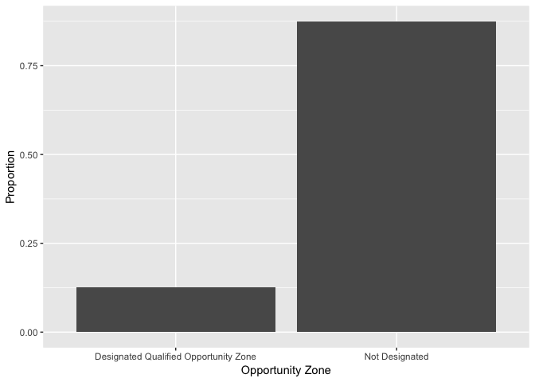
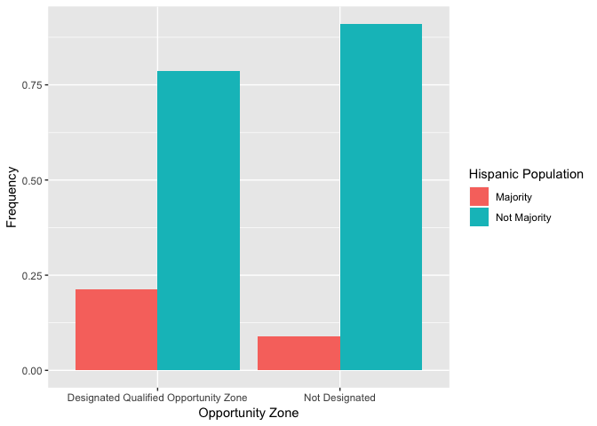
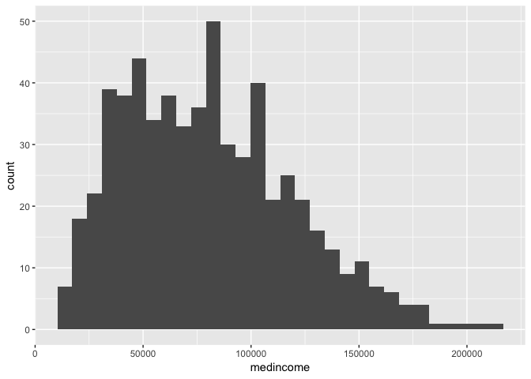
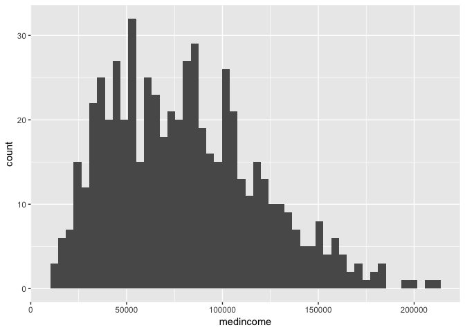
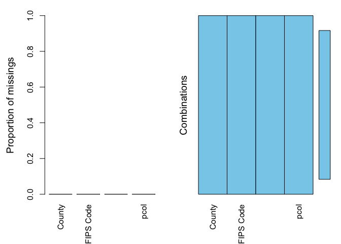
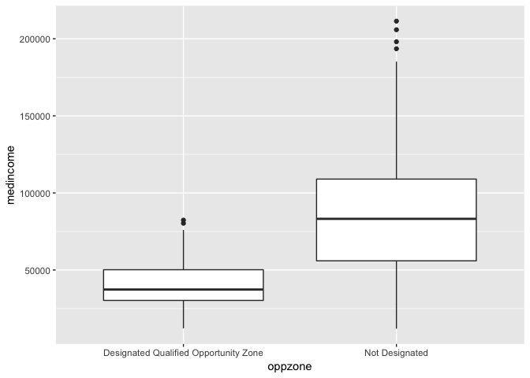
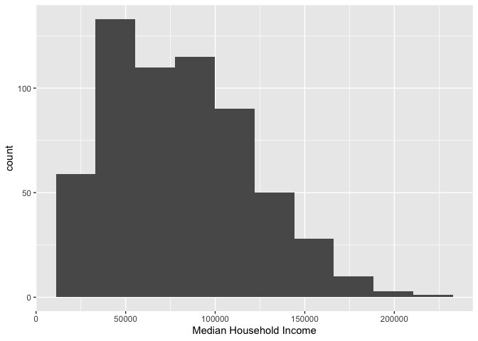
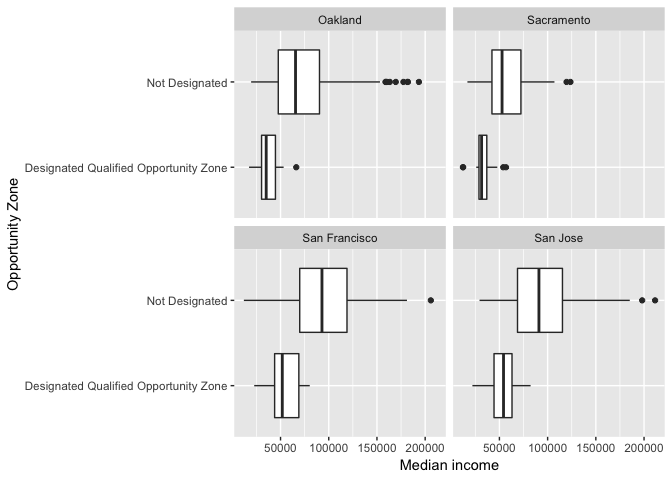
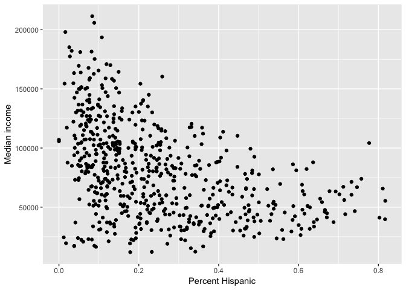
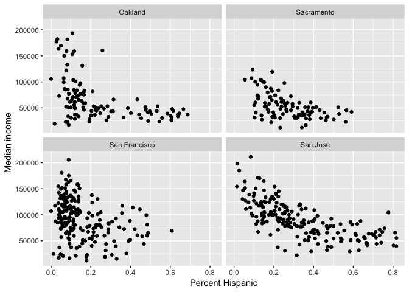

In Lab 2, we worked with county-level data. That is, the rows or units of observations in our data set represented counties. In this lab, we will be working with neighborhood data, using census tracts to represent neighborhoods. Specifically, you will learn how to use descriptive statistics and graphs to describe neighborhoods using R. The data were downloaded from PolicyMap. The objectives of the guide are as follows
This lab guide follows closely and supplements the material presented in Chapters 1,5 and 22 in the textbook R for Data Science (RDS).
Assignment 3 is due by 12:00 am, October 19th on Canvas. See here for assignment guidelines. You must submit an .Rmd file and its associated .html file. Name the files: yourLastName_firstInitial_asgn03. For example: brazil_n_asgn03.
As you did in Lab 2 and will do for all Labs, save and run all the code from this guide from your own R Markdown document. To open a new R Markdown file, click on File at the top menu in RStudio, select New File, and then R Markdown. A window should pop up. In that window, for Title, put in “Lab 3”. For Author, put your name. Leave the HTML radio button clicked, and select OK. A new R Markdown file should pop up in the top left window. Don’t change anything inside the YAML (the stuff at the top in between the ---). Also keep the grey chunk after the YAML.
```{r setup, include=FALSE}
knitr::opts_chunk$set(echo = TRUE)
```Delete everything else. Save this file (File -> Save) in an appropriate folder.
You will be working with census tract data for the cities of Sacramento, San Francisco, San Jose, and Oakland, the four largest cities in Northern California. Let’s get some practice working with data from PolicyMap, which provides Census data along with other cool and interesting neighborhood data.
Unlike the Census, PolicyMap does not have a user-friendly R package for downloading their data through an API. To save us time, I downloaded data from PolicyMap, cleaned the file, and uploaded it on GitHub. Let’s bring the csv file into R using read_csv(), which comes from the tidyverse package, which we need to load in.
library(tidyverse)
ncal.tracts <- read_csv("https://raw.githubusercontent.com/crd150/data/master/pmap_lab3.csv")
ncal.tractsThe dataset contains tract-level median household income, percent Hispanic, percent Black, whether the tract is designated as an Opportunity Zone (a high-poverty neighborhood eligible for federal economic development funding), the home mortgage loan-to-income ratio (also known as the leverage ratio), and whether the tract is “Majority” Hispanic (phisp > 50%) or “Not Majority” Hispanic. In putting this data file together, data wrangling was fairly extensive. I’ve uploaded a tutorial describing the steps for downloading and cleaning these data. You won’t need to go through the tutorial to complete this guide and Assignment 3, but please look through it at some point as it provides some important data wrangling functions that will be relevant for your final project, especially if you are planning to use PolicyMap.
Recall from Week 2 lecture our two important data types: categorical and numeric. Let’s first summarize a numeric variable - neighborhood median household income - using some basic descriptive statistics.
We use the function summarize() to calculate mean neighborhood income. The first argument inside summarize() is the data object ncal.tracts and the second argument is the function calculating the specific summary statistic, in this case mean().
summarize(ncal.tracts, mean(medincome))## # A tibble: 1 x 1
## `mean(medincome)`
## <dbl>
## 1 80309.Does the average neighborhood income differ by city? We need to pair summarize() with the function group_by() to answer this question. The function group_by() tells R to run subsequent functions on the data object by a group characteristic (such as gender, educational attainment, or in this case, city).
ncal.tracts %>%
group_by(city) %>%
summarize(mean(medincome))## # A tibble: 4 x 2
## city `mean(medincome)`
## <chr> <dbl>
## 1 Oakland 66706.
## 2 Sacramento 53562.
## 3 San Francisco 90985.
## 4 San Jose 91464.The above code uses the pipe operator %>%, which was first introduced in Lab 2. The utility of %>% is that it executes tasks on the same dataset using one line of continuous code. The first pipe sends ncal.tracts into the function group_by(), which tells R to group ncal.tracts by the variable city.
ncal.tracts %>%
group_by(city)How do you know the tibble is grouped? Because it tells you
The second pipe takes this grouped dataset and sends it into the summarize() command, which calculates the mean neighborhood income (by city, because the dataset is grouped by city).
We can calculate more than one summary statistic within summarize(). For example, to get the mean, median, standard deviation and interquartile range (IQR) of median income, and give column labels for the variables in the resulting summary table, we type in
ncal.tracts %>%
group_by(city) %>%
summarize(incmn = mean(medincome),
incmd = median(medincome),
incsd = sd(medincome),
inciqr = IQR(medincome))## # A tibble: 4 x 5
## city incmn incmd incsd inciqr
## <chr> <dbl> <dbl> <dbl> <dbl>
## 1 Oakland 66706. 51691 41262. 42011
## 2 Sacramento 53562. 48696. 24405. 28392.
## 3 San Francisco 90985. 88929 38443. 50490
## 4 San Jose 91464. 87917 34637. 48539Remember from lecture that the IQR is the difference between the 75th and 25th percentiles. It is a measure of spread, and more generally, an indicator of inequality. Another measure of neighborhood inequality is the 90/10 ratio. To calculate this ratio, we’ll first need to calculate the 90th and 10th percentiles using the quantile() command. We can do all of this inside summarize().
ncal.tracts %>%
group_by(city) %>%
summarize(incmn = mean(medincome),
incmd = median(medincome),
incsd = sd(medincome),
inciqr = IQR(medincome),
p90 = quantile(medincome, p = 0.90),
p10 = quantile(medincome, p = 0.10),
r90.10 = p90/p10) %>%
select(-(c(p90,p10)))## # A tibble: 4 x 6
## city incmn incmd incsd inciqr r90.10
## <chr> <dbl> <dbl> <dbl> <dbl> <dbl>
## 1 Oakland 66706. 51691 41262. 42011 4.38
## 2 Sacramento 53562. 48696. 24405. 28392. 3.14
## 3 San Francisco 90985. 88929 38443. 50490 3.56
## 4 San Jose 91464. 87917 34637. 48539 2.74
Let’s next summarize a categorical variable. oppzone indicates whether a tract is designated as an Opportunity Zone neighborhood. To get the percent of tracts that are Opportunity Zone neighborhoods, you’ll need to combine the functions group_by(), summarize() and mutate() using %>%.
ncal.tracts %>%
group_by(oppzone) %>%
summarize(n = n()) %>%
mutate(freq = n / sum(n))## # A tibble: 2 x 3
## oppzone n freq
## <chr> <int> <dbl>
## 1 Designated Qualified Opportunity Zone 75 0.125
## 2 Not Designated 524 0.875Let’s break up this chunk of code to show exactly what was done here. First, group_by(oppzone) separates the neighborhoods by Opportunity Zone designation. We then used summarize() to count the number of neighborhoods by Opportunity Zone designation. The function to get a count is n(), and we saved this count in a variable named n. This gives us the following table.
ncal.tracts %>%
group_by(oppzone) %>%
summarize (n = n())## # A tibble: 2 x 2
## oppzone n
## <chr> <int>
## 1 Designated Qualified Opportunity Zone 75
## 2 Not Designated 524Next, we used mutate() on this table to get the proportion of all neighborhoods by Opportunity Zone designation. The code sum(n) adds the values of n: 524+75 = 599. We then divide the value of each n by this sum: 75/599 = 0.125 and 524/599 = 0.875. That yields the final frequency table.
ncal.tracts %>%
group_by(oppzone) %>%
summarize (n = n()) %>%
mutate(freq = n / sum(n))## # A tibble: 2 x 3
## oppzone n freq
## <chr> <int> <dbl>
## 1 Designated Qualified Opportunity Zone 75 0.125
## 2 Not Designated 524 0.875We can add city to the group_by() function to disaggregate by city.
ncal.tracts %>%
group_by(city, oppzone) %>%
summarize (n = n()) %>%
mutate(freq = n / sum(n))## # A tibble: 8 x 4
## # Groups: city [4]
## city oppzone n freq
## <chr> <chr> <int> <dbl>
## 1 Oakland Designated Qualified Opportunity Zone 30 0.265
## 2 Oakland Not Designated 83 0.735
## 3 Sacramento Designated Qualified Opportunity Zone 23 0.23
## 4 Sacramento Not Designated 77 0.77
## 5 San Francisco Designated Qualified Opportunity Zone 11 0.0558
## 6 San Francisco Not Designated 186 0.944
## 7 San Jose Designated Qualified Opportunity Zone 11 0.0582
## 8 San Jose Not Designated 178 0.942Which city has the highest proportion of Opportunity Zone neighborhoods? Lowest?
The functions we’ve gone through so far describe one variable. It is often the case that we are interested in understanding whether two community variables are associated with one another.
Let’s go through the ways we can describe the association between: (1) two categorical variables; (2) one categorical variable and one numeric variable; (3) two numeric variables.
To summarize the relationship between two categorical variables, you’ll need to find the proportion of observations for each combination, also known as a cross tabulation. Let’s create a cross tabulation of the categorical variables oppzone and mhisp.
ncal.tracts %>%
group_by(oppzone, mhisp) %>%
summarize(n = n()) %>%
mutate(freq = n / sum(n))## # A tibble: 4 x 4
## # Groups: oppzone [2]
## oppzone mhisp n freq
## <chr> <chr> <int> <dbl>
## 1 Designated Qualified Opportunity Zone Majority 16 0.213
## 2 Designated Qualified Opportunity Zone Not Majority 59 0.787
## 3 Not Designated Majority 47 0.0897
## 4 Not Designated Not Majority 477 0.910A much higher proportion of Opportunity Zone neighborhoods are Majority Hispanic compared to non Opportunity Zone neighborhoods.
A typical way of summarizing the relationship between a categorical variable and a numeric variable is by taking the mean of the continuous variable for each level of the categorical variable. The variable oppzone is categorical with two categories (designated and not designated as an Opportunity Zone) and we can get the mean loan-to-income ratio for each of these categories.
ncal.tracts %>%
group_by(oppzone) %>%
summarize("Mean levratio" = mean(levratio))## # A tibble: 2 x 2
## oppzone `Mean levratio`
## <chr> <dbl>
## 1 Designated Qualified Opportunity Zone 3.45
## 2 Not Designated 3.36Let’s separate by city by adding city to the group_by() function.
ncal.tracts %>%
group_by(city, oppzone) %>%
summarize("Mean levratio" = mean(levratio))## # A tibble: 8 x 3
## # Groups: city [?]
## city oppzone `Mean levratio`
## <chr> <chr> <dbl>
## 1 Oakland Designated Qualified Opportunity Zone 3.46
## 2 Oakland Not Designated 3.30
## 3 Sacramento Designated Qualified Opportunity Zone 3.20
## 4 Sacramento Not Designated 2.99
## 5 San Francisco Designated Qualified Opportunity Zone 3.82
## 6 San Francisco Not Designated 3.36
## 7 San Jose Designated Qualified Opportunity Zone 3.54
## 8 San Jose Not Designated 3.53Any city stick out?
You can summarize the relationship between two numeric variables with the correlation coefficient. To calculate the correlation coefficient, use the function cor(). The first two arguments in cor() are the two numeric variables you want to calculate the correlation. Let’s calculate the correlation between neighborhood income and percent race, and neighborhood loan-to-income ratio and percent race. Group these correlations by city.
ncal.tracts %>%
group_by(city) %>%
summarize(hisp_ratio = cor(levratio,phisp),
blk_ratio = cor(levratio,pblk),
hisp_inc = cor(medincome,phisp),
blk_inc = cor(medincome,pblk))## # A tibble: 4 x 5
## city hisp_ratio blk_ratio hisp_inc blk_inc
## <chr> <dbl> <dbl> <dbl> <dbl>
## 1 Oakland 0.607 0.269 -0.468 -0.488
## 2 Sacramento 0.410 0.411 -0.544 -0.484
## 3 San Francisco 0.337 0.194 -0.309 -0.344
## 4 San Jose 0.607 -0.221 -0.693 -0.229
Another way of summarizing neighborhood variables and their relationships is through graphs and charts. The main package for R graphing is ggplot2 which is a part of the tidyverse package. The graphing function is ggplot() and it takes on the basic template
ggplot(data = <DATA>) +
<GEOM_FUNCTION>(mapping = aes(x, y))ggplot() is the base function where you specify your dataset using the data = <DATA> argument.+ and <GEOM_FUNCTION>() where <GEOM_FUNCTION>() is a unique function indicating the type of graph you want to plot. For example, the <GEOM_FUNCTION>() for a histogram is geom_histogram().mapping = aes() argument. Charts and graphs have an x-axis, y-axis, or both.
We use bar charts to summarize categorical variables. Bar charts show either the number or frequency of each category. To create a bar chart, use geom_bar() for <GEOM_FUNCTION>(). Let’s show a bar chart of oppzone. We can borrow from the code we used earlier to create our oppzone frequency table and pipe this table directly into ggplot().
ncal.tracts %>%
group_by(oppzone) %>%
summarize (n = n()) %>%
mutate(freq = n / sum(n)) %>%
ggplot() +
geom_bar(mapping=aes(x=oppzone, y=freq),stat="identity") We didn’t need to specify data = <DATA> in ggplot() because it was piped in. Within aes(), we specified the categorical variable oppzone on the x-axis and then the proportion of neighborhoods freq on the y-axis. The argument stat = "identity" tells ggplot() to plot the exact value listed for the variable freq.
The X and Y axes labels are not so great. We can relabel the axes using the xlab() and ylab() functions.
ncal.tracts %>%
group_by(oppzone) %>%
summarize (n = n()) %>%
mutate(freq = n / sum(n)) %>%
ggplot() +
geom_bar(mapping=aes(x=oppzone, y=freq),stat="identity") +
xlab("Opportunity Zone") +
ylab("Proportion")
We can also show a cross tabulation of two categorical variables using a bar chart. Let’s take the earlier code used to create the cross tabulation of Opportunity Zone and Majority/Not Majority Hispanic and pipe that into ggplot()
ncal.tracts %>%
group_by(oppzone, mhisp) %>%
summarize(n = n()) %>%
mutate(freq = n / sum(n)) %>%
ggplot() +
geom_bar(mapping=aes(x=oppzone,y=freq,fill=mhisp), position="dodge",stat="identity") +
xlab("Opportunity Zone") +
ylab("Frequency") +
labs(fill="Hispanic Population") 
The only real difference between the code to create this chart and the code to create the single variable bar chart is that you add the second categorical variable mhisp into the argument fill= within aes(). The argument position="dodge" puts the bars side-by-side rather than stacked (take out position="dodge" from the above code and see what a stacked bar chart looks like). The above code also changes the legend title using the function labs(). As we went through in lecture, you can add a title, subtitle and footnotes using the labs() function.
Histograms are used to summmarize a single numeric variable. To create a histogram, use geom_histogram() for <GEOM_FUNCTION()>. Let’s create a histogram of median household income.
ncal.tracts %>%
ggplot() +
geom_histogram(mapping = aes(x=medincome))## `stat_bin()` using `bins = 30`. Pick better value with `binwidth`.
Because a single variable is plotted on the x-axis, we specify x = in aes() but not a y =. The message tells us that we can use the bins = argument to change the number of bins used to produce the histogram. You can increase the number of bins to make the bins narrower and thus get a finer grain of detail. Let’s increase the number of bins from 30 (the default) to 50.
ncal.tracts %>%
ggplot() +
geom_histogram(mapping = aes(x=medincome), bins = 50)
Or you can decrease the number of bins to get a broader visual summary of the shape of the variable’s distribution. Let’s decrease the number of bins to 10.
ncal.tracts %>%
ggplot() +
geom_histogram(mapping = aes(x=medincome), bins = 10)
We can use a boxplot to visually summarize the distribution of a single variable or the relationship between a categorical and numeric variable. Use geom_boxplot() for <GEOM_FUNCTION()> to create a boxplot. Let’s examine median household income.
ncal.tracts %>%
ggplot() +
geom_boxplot(mapping = aes(y = medincome))Remember from the week’s readings that the points oustide the whiskers represent outliers. Outliers are defined as having values that are either larger than the 75th percentile plus 1.5 times the IQR or smaller than the 25th percentile minus 1.5 times the IQR. The IQR is $55,103, the 75th percentile is $104,670 and the 25th percentile is $49,568. While we don’t see outliers at the bottom, we do see outliers at the top - these are neighborhoods with median income values greater than $104,670 + 1.5*$55,103 = $187,324.5
Let’s examine the distribution of median income by Opportunity Zone. Because we are examining the association between two variables, we need to specify x and y variables.
ncal.tracts %>%
ggplot() +
geom_boxplot(mapping = aes(x = oppzone, y = medincome)) 
The boxplot is for all neighborhoods combined. Use the facet_wrap()function to separate by city
ncal.tracts %>%
ggplot() +
geom_boxplot(mapping = aes(x = oppzone, y = medincome)) +
facet_wrap(~city) 
Note the tilde operator ~ before city.
The labels for oppzone is really long. We can change the label or we can create horizontal boxplots. To create horizontal boxplots, add the coord_flip() function at the end. Let’s also change the axes labels to make them more descriptive.
ncal.tracts %>%
ggplot() +
geom_boxplot(mapping = aes(x = oppzone, y = medincome)) +
facet_wrap(~city) +
ylab("Median income") +
xlab("Opportunity Zone") +
coord_flip()
The scatterplot is the traditional graph for visualizing the association between two continuous variables. For scatterplots, we use geom_point() for <GEOM_FUNCTION>(). Because we are plotting two variables, we specify an x and y axis. Does median household income change with greater percent Hispanic in the neighborhood?
ncal.tracts %>%
ggplot() +
geom_point(mapping = aes(x = phisp, y = medincome)) +
xlab("Percent Hispanic") +
ylab("Median income")
And for each city?
ncal.tracts %>%
ggplot() +
geom_point(mapping = aes(x = phisp, y = medincome)) +
xlab("Percent Hispanic") +
ylab("Median income") +
facet_wrap(~city) 
ggplot() is a powerful function, and you can make a lot of really visually captivating graphs. You can also make maps with the function, which we’ll cover in next week’s lab. We have just scratched the surface of its functions and features. The list of all possible plots for <GEOM_FUNCTION>() can be found here. You can also make your graphs really “pretty” and professional looking by altering graphing features, including colors, labels, titles and axes. For a list of ggplot() functions that alter various features of a graph, check out Chapter 22 in RDS.
Download and open the Assignment 3 R Markdown Script. Any response requiring a data analysis task must be supported by code you generate to produce your result. (Just examining your various objects in the “Environment” section of R Studio is insufficient—you must use scripted commands.).
Website created and maintained by Noli Brazil